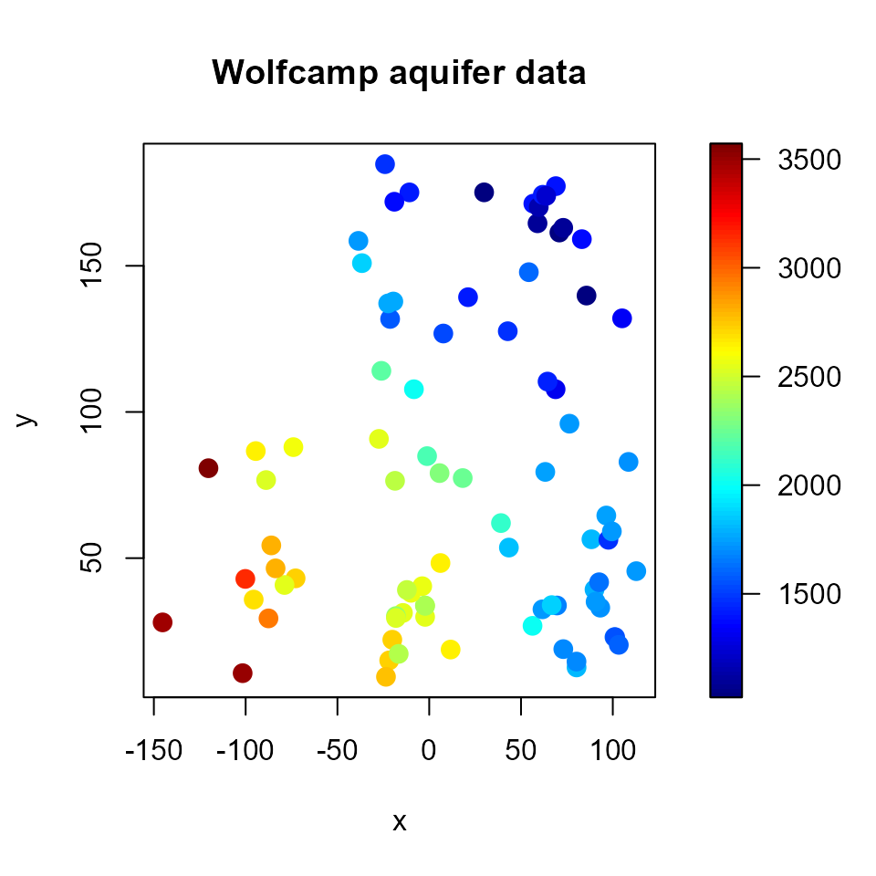

vignettes/docs/Introduccion.Rmd
Introduccion.RmdSi \(Y(\mathbf{x})\) es un valor aleatorio en la posición espacial \(\mathbf{x}\in\mathbb{R}^{d}\), entonces:\[\left\{ Y(\mathbf{x}):\mathbf{x}\in D\subset\mathbb{R}^{d}\right\} ,\] se denomina proceso espacial (univariante).
Normalmente sólo se observa un conjunto de valores:\[\left\{ y(\mathbf{x}_{1}),\ldots,y(\mathbf{x}_{n})\right\}\] (realización parcial).
Dependiendo de las suposiciones sobre el conjunto \(D\), se distingue entre:
Procesos geoestadísticos: índice espacial continuo.
\(D\) es un subconjunto fijo que contiene un rectángulo \(d\)-dimensional de volumen positivo.
El proceso puede ser observado en cualquier posición.
Procesos reticulares/regionales: índice espacial discreto.
\(D\) es un conjunto numerable de posiciones/regiones.
El proceso solo puede ser observado en determinadas posiciones.
Procesos/patrones puntuales: índice espacial aleatorio.
\(D\) es un proceso puntual en \(\mathbb{R}^{d}.\)
Las posiciones en las que se observa el proceso son aleatorias.
Caso general: proceso puntual marcado.
## Package npsp: Nonparametric Spatial Statistics,
## version 0.7-5 (built on 2019-06-29).
## Copyright (C) R. Fernandez-Casal 2012-2018.
## Type `help(npsp)` for an overview of the package and
## `demo(package = "npsp")` for the list of available demos.## 'data.frame': 85 obs. of 3 variables:
## $ lon : num 42.78 -27.4 -1.16 -18.62 96.47 ...
## $ lat : num 127.6 90.8 84.9 76.5 64.6 ...
## $ head: num 1464 2553 2158 2455 1756 ...## lon lat head
## Min. :-145.24 Min. : 9.414 Min. :1024
## 1st Qu.: -21.30 1st Qu.: 33.682 1st Qu.:1548
## Median : 11.66 Median : 59.158 Median :1797
## Mean : 16.89 Mean : 79.356 Mean :2002
## 3rd Qu.: 70.90 3rd Qu.:131.825 3rd Qu.:2540
## Max. : 112.80 Max. :184.766 Max. :3571# Scatter plot with a color scale
with(aquifer, spoints(lon, lat, head, main = "Wolfcamp aquifer data"))
En R hay disponibles una gran cantidad de paquetes para el análisis estadístico de datos espaciales:
Procesos geoestadísticos: gstat, geoR, geoRglm, fields, spBayes, RandomFields, VR:spatial, sgeostat, vardiag, npsp
Procesos reticulares/regionales: spdep, DCluster, spgwr, ade4
Procesos puntuales: spatstat, VR:spatial, splancs
Otros paquetes:
sp, sf, spacetime, maptools, rgdal, raster, …
spgrass6, GeoXp, PBSmapping, …
googleVis, plotGoogleMaps, …
Una introducción a la geoestadística con el paquete geoR está disponible aquí.
sp
Se decidió crear un paquete de R con el objetivo de unificar la manipulación de datos espaciales:
sp: Classes and methods for spatial data.Bivand, R.S., Pebesma, E.J. y Gómez-Rubio, V. (2008). Applied Spatial Data Analysis with R. Use R! Series. Springer.http://www.asdar-book.org
Sirve de soporte a muchos otros paquetes.
sf